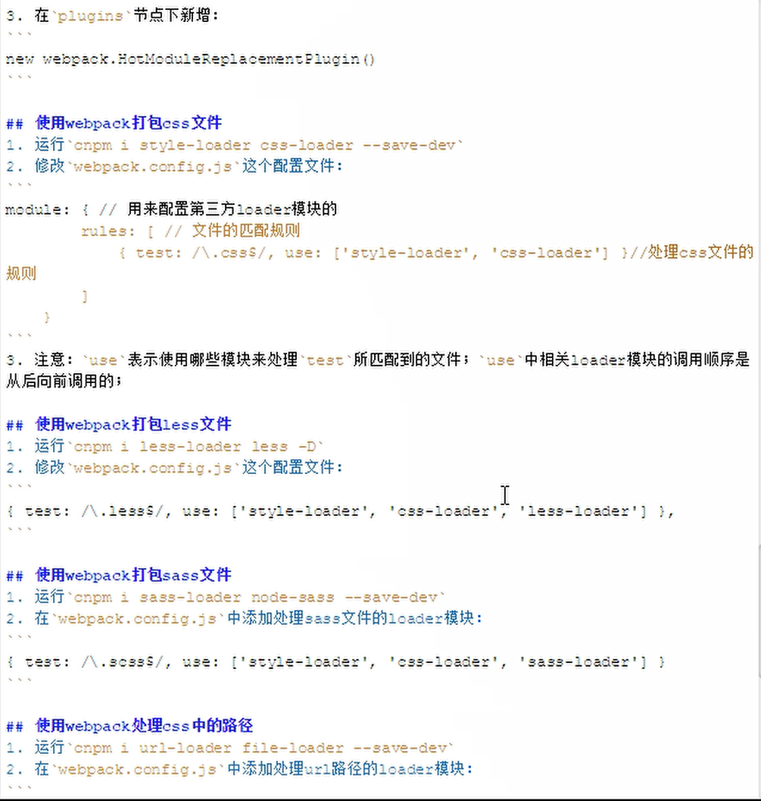

---恢复内容开始---
一、webpack 默认只能打包处理 JS 类型的文件，无法处理 其他的非 JS 类型的文件；
如果非要处理 非 JS 类型的文件，我们需要手动安装一些 合适 第三方 loader 加载器；
二、webpack 处理第三方文件类型的过程：
1、发现这个要处理的文件不是JS文件，然后就去配置文件中，查找有没有对应的第三方 loader 规则；
2、如果能找到对应的规则，就会调用 对应的 loader 处理 这种文件类型；
3、在调用 loader 的时候，是从后往前调用的；
4、当最后的 一个 loader 调用完毕 ，会把处理的结果，直接给webpack 进行 打包合并，最终输出到bundle.js中去。

三、导入CSS文件：
1、安装 npm i style-loader css-loader -D
2、打开 webpack.config.js 这个配置文件，在里面，新增一个配置节点，叫做 module,它是一个对象；
在这个 module 对象身上，有个 rules 属性，这个 rules 属性是个数组，这个数组中，存在了所有第三方文件的匹配和处理规则。
<!DOCTYPE html>
<html lang="en">
<head>
<meta charset="UTF-8" />
<title>Document</title>
<!-- 直接引入main.js会因为ES6新语法的问题，浏览器不识别
通过webpack这个前端构建工具，把main.js转成bundle.js -->
<!-- 代码 webpack-dev-server 会将生成一个虚拟的bundle.js的文件，减少内存！ -->
<!-- <script src="http://localhost:8081/bundle.js"></script> -->
<!-- 当使用 html-webpack-plugin 之后，我们不再需要手动处理 bundle.js 的引用路径了
因为，这个插件，已经帮我们自动创建了一个合适的 script ，并且，引用了正确的路径-->
<link
rel="stylesheet"
href="/node_modules/bootstrap/dist/css/bootstrap.css"
/>
<!-- npm i bootstrap -S -->
</head>
<body>
<ul>
<li>1</li>
<li>2</li>
<li>3</li>
<li>4</li>
<li>5</li>
<li>6</li>
<li>7</li>
<li>8</li>
</ul>
<div class="box"></div>
<!-- <span class="glyphicon glyphicon-search" aria-hidden="true"></span> -->
</body>
</html>html,
body {
padding: 0;
margin: 0;
li {
font-size: 12px;
line-height: 30px;
}
.box {
width: 220px;
height: 120px;
background: url("../images/moye.jpg");
background-size: cover;
}
}//这是项目JS的主入口文件
//全局安装webpack npm i webpack -g (i 为 install g为 global 全局)
//输入 npm init -s
// (这个命令会在当前目录生成一个package.json文件，这个文件中会记录一些关于项目的信息，
// 比如：项目的作者，git地址，入口文件、命令设置、项目名称和版本号等等，一般情况下这个文件是必须要有的，
// 方便后续的项目添加和其他开发人员的使用。)
// (--save、-S参数意思是把模块的版本信息保存到dependencies（生产环境依赖）中，
// 即你的package.json文件的dependencies字段中)
// npm i jquery -S 导入jquery
// --save、-S参数意思是把模块的版本信息保存到dependencies（生产环境依赖）中，
// 即你的package.json文件的dependencies字段中
//由于ES6的代码，太高级了，浏览器解析不了，需要进行转换
import $ from "jquery";
import "./css/index.css";
import "./css/index.less";
import "./css/index.scss";
// import "bootstrap/dist/css/bootstrap.css"; 引入node_mudules中的文件，前面不需要加此路径，
$(function() {
$("li:odd").css("backgroundColor", "yellow");
$("li:even").css("backgroundColor", function() {
return "#" + "D97634";
});
});
// 1.webpack能够处理JS文件的相互依赖关系；
// 2.webpack能够处理JS的兼容问题，把高级的、浏览器不能识别的语法，转为
//低级的，浏览器能正常识别的语法；
// webpack 要打包的文件的路径 打包好的输出的文件的路径
//因版本不一样，无法进行文件的转换，在package.json中导致写下以下两行代码
// "dev": "webpack --mode development",
// "build": "webpack --mode production"这样才能将main.js转为bundle.js
//使用 webpack-dev-server 这个工具，来实现自动打包编译的功能：是一个用来快速搭建本地运行环境的工具
//1. 运行 npm i webpack-dev-server -D 把这个工具安装到项目的本地开发依赖；
//2.安装完毕后，这个工具的用法 和 webpack 命令的用法，完全一样；
//3.由于，我们是在项目中，本地安装的 webpack-dev-server ，所以，无法把它当作脚本命令，
// 在powershell 终端中直接执行；（只有那些安装到全局-g的工具，才能在终端中正常执行）
//4.webpack-dev-server 这个工具，如果想要正常运行，要求，在本地项目中，必须安装webpack;
//5.webpack-dev-server 帮我们打包生成的 bunld.js 文件，并没有存放到 实际 的物理磁盘上，
// 而是，直接托管到了 电脑的内存中，所以，我们在项目根目录中，根本找不到这个打包好的 bundle.js
//6.我们可以认为，webpack-dev-server 把打包好的文件，以一种虚拟的形式，托管到了 咱们项目的根目录中，
// 虽然我们看不到它，但是，可以认为 和 dist src node_modules 平级，有一个看不见的文件，叫做 bundle.js
// "dev": "webpack-dev-server --open --port 8081 --contentBase src --hot",
// -直接打开-端口号 -要显示的页面路径(这下面的index.html) -减少源代码的刷新{
"name": "vue",
"version": "1.0.0",
"description": "",
"main": "webpack.config.js",
"dependencies": {
"bootstrap": "^4.3.1",
"jquery": "^3.4.1",
"webpack-cli": "^3.3.5"
},
"devDependencies": {
"css-loader": "^3.0.0",
"file-loader": "^4.0.0",
"html-webpack-plugin": "^3.2.0",
"less": "^3.9.0",
"less-loader": "^5.0.0",
"node-loader": "^0.6.0",
"node-sass": "^4.12.0",
"sass-loader": "^7.1.0",
"scss-loader": "0.0.1",
"style-loader": "^0.23.1",
"url-loader": "^2.0.1",
"webpack": "^4.35.2",
"webpack-dev-server": "^3.7.2"
},
"scripts": {
"test": "echo \"Error: no test specified\" && exit 1",
"dev": "webpack-dev-server --open --port 8081 --contentBase src --hot",
"build": "webpack --mode production"
},
"keywords": [],
"author": "",
"license": "ISC"
}const path = require("path");
// 导入在内存中生成HTML页面的插件
//只要是插件，都一定要放到 plugins节点中去
//这个插件的两个作用：
//1.自动在内存中根据指定页面生成一个内存的页面；
//2.自动，把打包好的 bundle.js 追加到页面中去
const htmlWebpackPlugin = require("html-webpack-plugin");
//这个配置文件其实就是一个JS文件，通过NODE中的操作，向外暴露一个配置对象
module.exports = {
entry: path.join(__dirname, "./src/main.js"), //入口，要打包的文件
output: {
//输出相关配置
path: path.join(__dirname, "./dist"), //指定打包好的文件，输出到哪个文件夹目录中去
filename: "bundle.js" //指定输出的文件名称
},
mode: "development", //因为版本不一样，需要添加这个才能完成输出！！！
plugins: [
//配置插件的节点
new htmlWebpackPlugin({
//创建一个在内存中生成HTML 页面的插件
template: path.join(__dirname, "./src/index.html"), //指定模板页面，将会根据指定的页面路径，
//去生成内存中的页面
filename: "index.html" // 指定生成的页面的名称
})
],
module: {
//这个节点，用于配置所有的第三方模块加载器
rules: [
// 所有第三方模块的匹配规则
{ test: /\.css$/, use: ["style-loader", "css-loader"] }, //配置处理.css文件的第三方loader规则
{ test: /\.less$/, use: ["style-loader", "css-loader", "less-loader"] }, //处理.less文件
{ test: /\.scss$/, use: ["style-loader", "css-loader", "sass-loader"] }, //处理.scss文件
{
test: /\.(jpg|png|gif|bmp|jpeg)$/,
use: "url-loader?limit=616&name=[hash:8]-[name].[ext]"
} //处理图片文件 npm i url-loader file-loader -D
//limit 给定的值，是图片的大小，单位是byte，如果我们引用的图片，大于或等于给定的值，
// 则不会被转为base64 格式的字符串，如果小于给定的值，则会转为base64的字符串
//哈希值 正常为32位，这里面随便设置几位，为了区分两个同名的图片
// {
// test: /\.(ttf|eot|svg|woff|woff2)$/,
// use: "url-loader" //处理字体文件
// }
]
}
};
//在控制台输入 webpack 对项目进行打包，此时webpack进行以下几步：
//1.首先，webpack发现，我们并没有通过命令的形式，给它指定入口和出口；
//2.webpack就会去项目的根目录中，查找一个叫做' webpack.config.js'的配置文件；
//3.当找到配置文件后，webpack 会去解析执行这个配置文件，当解析执行完配置文件后，
// 就得到了配置文件中，导出的配置对象；
//4.当webpack 拿到配置对象后，就拿到了配置对象中，指定的入口和出口，然后进行打包构建。